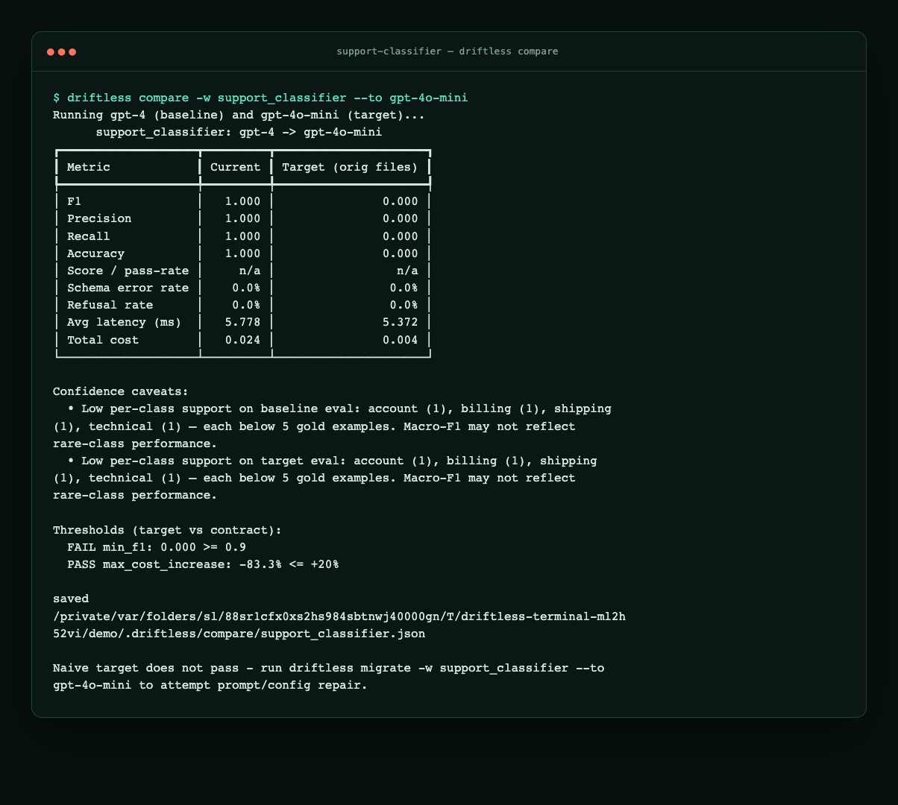

Your ticket classifier’s model got deprecated
The use case
You run a support product that routes every inbound ticket through an LLM
classifier before a human ever sees it. The model returns a small JSON object
like {"category": "billing"}. Downstream code parses that JSON strictly — no
markdown fences, no extra prose — and files the ticket into billing, technical,
account, or refund.
For months the system runs on gpt-3.5-turbo. The prompt and few-shot examples
were tuned for that model. Then the provider announces deprecation. Someone on
the team updates one line in config/llm.yml to gpt-4o-mini, opens a PR, and
merges. Unit tests still pass. Staging still "looks fine" because people spot-check
a handful of tickets in the playground.
Two weeks later the support queue spikes. Roughly half the tickets never get a
category: the new model wraps JSON in markdown code fences, your parser correctly
rejects the output as invalid, and the workflow records null. Refund tickets
also start landing in billing because the old prompt never spelled out the
rule clearly enough for the new model's priors.
Nothing in infrastructure broke. The model ID changed; the prompt did not. That
gap — treating a model swap like a dependency bump instead of a behavior change —
is the use case this post covers.
What driftless does here: run your eval harness under the candidate model,
repair only the prompt files you allow, validate on a holdout split the optimizer
never saw, and open a PR (or issue) with metrics and diffs.
Reproduce the core failure first (bundled, key-free)
Use the wheel's bundled fixture before the larger testbed:
pip install driftless
driftless copy-example support-classifier --out-dir driftless-classifier-demo
cd driftless-classifier-demo
driftless validate -w support_classifier
driftless compare -w support_classifier --to gpt-4o-mini
The four-row smoke demo deterministically shows F1 1.000 → 0.000 while cost
falls 0.024 → 0.004. It proves the compare and quality-gate path, not provider
model quality or statistical confidence. Continue key-free with
migrate ... --generator none to record a deliberately BLOCKED result.
Successful repair requires provider credentials and is nondeterministic.
Artifact reference:
EXAMPLE_SUCCESS_PR.md separates public testbed PR
4 (290 labels, 0.904 tuning / 0.901 holdout) from the different bundled
four-row saved fixture (1.000 metrics). The published CLI ships no
deterministic repair generator; exact key-free reproduction covers the compare
and blocked --generator none paths, while successful LLM repair requires
provider credentials and is nondeterministic.

The walkthrough uses a real, runnable example in
support-classifier-svc:
a fictional B2B SaaS with ~290 labeled tickets and the same strict JSON contract.
If you only remember one rule: change the model under the same harness before
you merge the model change. A migration is not "does the new model answer?"
It is "does the new model satisfy the same parser, labels, cost accounting, and
release gate as production?"
The app (and why a one-line swap fails)
The service looks like production LLM apps you already have:
| Piece | Testbed path |
|---|---|
| Prompt + few-shots | prompts/system.md, prompts/examples.yml |
| Model default | config/llm.yml → gpt-3.5-turbo |
| Runtime override | SUPPORT_CLASSIFIER_MODEL env var |
| Eval harness | python evals/run_eval.py |
| Gold labels | evals/tickets.labels.jsonl (290 tickets) |
| Output contract | schemas/ticket.schema.json |
| Parser (strict) | src/support_classifier/postprocess.py |
The parser does not strip markdown fences — by design. From the code:
We do not try to rescue markdown-fenced output here — surfacing those as
failures is the point (it's a real production parsing bug).
The migration contract lives in driftless.yml. Both support_classifier and
a second workflow quick_triage still default to gpt-3.5-turbo, which the
lifecycle catalog marks deprecated (retirement date in the past as of 2026).
Optional full testbed appendix: reproduce the naive regression
Clone the testbed and reset the prompt to the hand-written baseline used in
CI migrations (before any repair):
git clone https://github.com/driftless-dev/support-classifier-svc
cd support-classifier-svc
pip install -r requirements.txt driftless
cp evals/fixtures/prompt-baseline-scenario3.md prompts/system.md
export SUPPORT_CLASSIFIER_SIMULATE=1 # deterministic simulator, no API key
driftless compare -w support_classifier --to gpt-4o-mini
That baseline prompt is short — it never says "raw JSON only":
- billing: questions about invoices, charges, payments, or subscriptions
- refund: the customer wants their money returned
...
Respond in JSON with a single "category" field, for example: {"category": "billing"}
On a real run against the simulator (July 2026), compare prints:
Running gpt-3.5-turbo (baseline) and gpt-4o-mini (target)...
┏━━━━━━━━━━━━━━━━━━━┳━━━━━━━━━┳━━━━━━━━━━━━━━━━━━━━━┓
┃ Metric ┃ Current ┃ Target (orig files) ┃
┡━━━━━━━━━━━━━━━━━━━╇━━━━━━━━━╇━━━━━━━━━━━━━━━━━━━━━┩
│ F1 │ 0.903 │ 0.000 │
│ Schema error rate │ 0.0% │ 100.0% │
│ Total cost │ 0.033 │ 0.011 │
└───────────────────┴─────────┴─────────────────────┘
Thresholds (target vs contract):
FAIL min_f1: 0.000 >= 0.9
FAIL max_schema_error_rate: 1.000 <= 0.02
Naive target does not pass - run driftless migrate ...
Current model passes. Naive swap fails every threshold. F1 collapses to zero
because 100% of target outputs fail schema validation — the simulator is
deliberately adversarial here, modeling gpt-4o-mini returning fenced JSON that
parse_category() rejects.
Do not treat that offline number as a benchmark for either provider model. Treat
it as a production-contract test: if a new model changes output shape, your eval
should fail before your parser does. The live 2x2 later in this post shows the
more common version of the same problem: no schema explosion, but a real quality
drop once the prompt has been tuned around the old model.
Step 1: Describe the workflow once
The committed driftless.yml (abbreviated) wires the harness, editable files,
and gates:
workflows:
support_classifier:
run:
command: python evals/run_eval.py
input_path: evals/tickets.inputs.jsonl
output_path: evals/outputs.jsonl
model:
current: gpt-3.5-turbo
target_candidates: [gpt-4o-mini]
env_var: SUPPORT_CLASSIFIER_MODEL
config_file: config/llm.yml
config_path: support_classifier.model
files:
editable: [prompts/system.md, prompts/examples.yml]
eval:
labels_path: evals/tickets.labels.jsonl
label_field: category
cost_field: cost_usd # per-record cost for plan/compare
thresholds:
min_f1: 0.90
max_schema_error_rate: 0.02
migration:
holdout_required: true
max_iterations: 6
Driftless shells out to run_eval.py with SUPPORT_CLASSIFIER_MODEL set. It
never reimplements your post-processing.
driftless validate -w support_classifier # contract + one harness run
Step 2: Compare is your pre-flight check
compare is the evidence you attach to the migration PR before anyone merges
a model bump. It answers: does this swap pass our bar with today's prompt?
The scorecard above is the answer: no. Save the JSON under
.driftless/compare/support_classifier.json for report / open-pr.
Decision snapshot:
| Result | What it means | Next command |
|---|---|---|
| Target passes thresholds | Candidate is shippable as-is | driftless open-pr |
| Target fails, repair may help | Prompt is coupled to the old model | driftless migrate |
| Holdout still fails after repair | Evidence is useful, merge is not | Open an issue |
Step 3: Migrate + open a PR
# Simulator repair (deterministic, no API key):
SUPPORT_CLASSIFIER_SIMULATE=1 driftless migrate -w support_classifier \
--to gpt-4o-mini --generator llm # needs OPENAI_API_KEY for the repair LLM
# Real end-to-end (what the testbed's "Migrate model" Action does):
export OPENAI_API_KEY=...
driftless migrate -w support_classifier --to gpt-4o-mini --generator llm
driftless open-pr -w support_classifier --create
The testbed workflow
.github/workflows/migrate-on-model-change.yml
does exactly this: restores the baseline prompt fixture, runs audit-labels,
compare, migrate --strict-label-audit, then open-pr --create. The PR body
includes the scorecard, file diffs, and attempt log.
Blocked is valid. If holdout F1 cannot reach min_f1: 0.90, driftless
opens an issue with evidence instead of a false-confidence PR.
Real API numbers differ from the simulator (on purpose)
The simulator exaggerates fenced-JSON failures so CI can prove the workflow
without keys. On live gpt-3.5-turbo / gpt-4o-mini with the same
hand-written prompt, macro-F1 is ~0.92 for both — the dramatic regression
doesn't show until you've optimized the prompt.
That caveat is the point, not a footnote. Offline simulation proves plumbing and
contract failure handling. Live runs prove provider behavior. A serious migration
uses both, and the PR should label which evidence came from which mode.
The testbed documents a 2×2 control on all 290 labels (real API):
| Prompt | gpt-3.5-turbo |
gpt-4o-mini |
|---|---|---|
| P0 — original hand prompt | 0.922 | 0.904 |
| P_src* — optimized on source | 0.993 | 0.921 |
| P_tgt* — optimized on target | 1.000 | 0.987 |
Takeaways:
- 0.922 → 0.993 on the source is mostly prompt debt, not "migration."
- 0.993 → 0.921 after swap is model-induced drift (few-shots tuned for
the wrong model). - 0.921 → 0.987 after
migrate/refineon the target is the migration
win you should report.
Full methodology:
Measuring migration gains honestly.
What plan sees today
Both workflows still on gpt-3.5-turbo:
SUPPORT_CLASSIFIER_SIMULATE=1 driftless plan
┃ Workflow ┃ Trigger ┃ Migrate ┃ Decision ┃
│ support_classifier│ deprecation │ gpt-3.5-turbo -> gpt-4o-mini │ ISSUE (critical) │
│ quick_triage │ deprecation │ gpt-3.5-turbo -> gpt-4o-mini │ ISSUE (critical) │
2 workflow(s) need action across 1 model move(s):
gpt-3.5-turbo -> gpt-4o-mini (deprecation): support_classifier, quick_triage
Grouped by move, not two duplicate PRs — see post 3.
Next steps
- Post 2: labels move, model stays →
refine - Post 3: schedule this in GitHub Actions →
init-ci/plan - Try it: support-classifier-svc → Actions → Migrate model